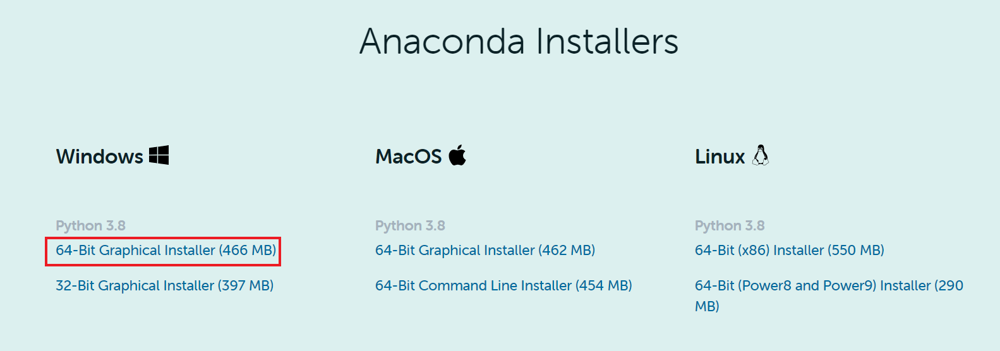
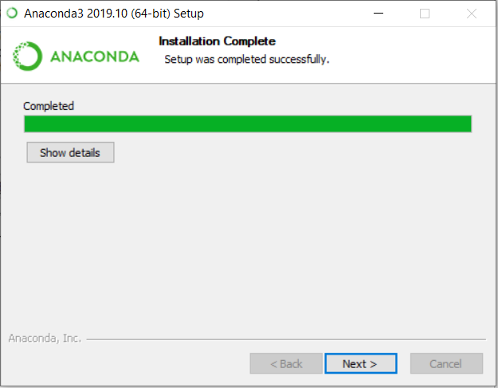
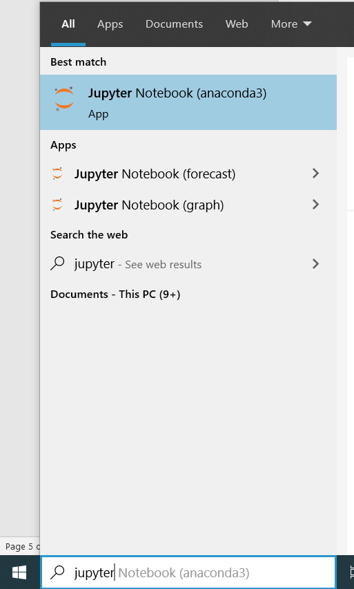

Anaconda Installation Guide
Dear Learners,
Below you may find the steps to download and install Anaconda in your PC.
FAQ – What is Anaconda and why are we using it?
- Anaconda is a free and open-source distribution of the Python programming language
- Anaconda come with many packages along with Python, which is essential for data analysis and data science work
Section 1: Download Anaconda Installer
-
Follow this link. Scroll down to the section “Anaconda Installers” and click on “64-Bit Graphical Installer” as shown in the screenshot below.

2. Click “Save” to start downloading the Anaconda Installer

Section 2: Install Anaconda
Once you have downloaded the installer, you can launch the installer and follow the instructions as prompted.
-
Navigate to the directory where the Anaconda Installer is downloaded. Double click on the installer as shown in the screenshot below.

-
Click Next
-
Click Next

-
Click Next

-
Click Install

-
Wait for it to run, it may take 5-10minutes. Click Next when it is completed.

-
Untick both boxes and click Finish
Section 3: Running Python Integrated Development Environment (IDE)
With Anaconda installed, two Python IDE – Jupyter Notebook and Spyder is automatically installed as well. We strongly recommend beginners to start writing Python codes using Jupyter Notebook.
3.1: Launch Jupyter Notebook
To launch Jupyter Notebook, type “jupyter” in your PC’s search box and click on “Jupyter Notebook”

Jupyter offers two versions of user interface, i.e. JupyterLab and Jupyter notebook.
Personally, I highly recommend using JupyterLab. Steps to launch each version are as follow:
3.1.1: Running JupyterLab
Open a browser and type in the link - http://localhost:8888/lab
3.2.2: Running Jupyter notebook (classic version)
Open a browser and type in the link - http://localhost:8888/tree
3.2: Launch Spyder
To launch Spyder, type “spyder” in your PC’s search box and click on “Spyder”

Section 4: Install R Studio and Visual Studio Code using Anaconda
It is also possible to download R Studio and Visual Studio Code using Anaconda.
-
Launch Anaconda Navigator
-
Look for R Studio and Visual Studio Code anc click Install
Last Updated: 7 September 2020
Anaconda Version: Anaconda Individual Edition 2020.07
Python Version: 3.8